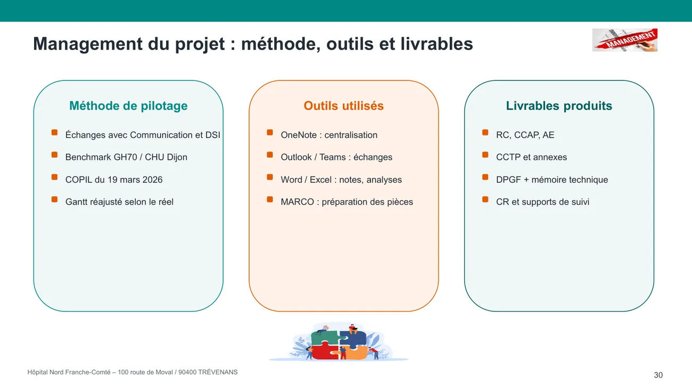

Étude de cas · BUT 3 · SAÉ 5.01 et 6.01
Préparer le marché de refonte du site internet du GHT Nord Franche-Comté
Réunir sur un seul site l’hôpital, le centre de soins de longue durée, l’institut de formation et le centre d’enseignement des soins d’urgence, en conciliant la communication, la DSI et la commande publique.
- Période
- 2025-2026
- Format
- Individuel, en alternance
- Domaines
- Gestion de projet, Pilotage et performance, Achats et relation client

Contexte
Le GHT Nord Franche-Comté voulait réunir sur un même site plusieurs établissements. Le site existant était ancien, sur une technologie propriétaire et non adapté aux mobiles.
Objectif
Préparer, pour le service achats, le marché qui confiera la refonte à un prestataire : un besoin consolidé, une procédure sûre et des pièces prêtes à publier.
Mon rôle
Le directeur général est le commanditaire, la responsable stratégique de la communication pilote le projet côté métier, le chef de projet informatique porte les exigences techniques et de sécurité. J’assure pour le service achats la traduction du besoin en pièces de marché, que la cellule des marchés relit puis publie.
Démarche
- MARCO
- OneNote
- Teams
- Business Object
- Gantt
- SWOT
- Computation des seuils
- Diagnostic SWOT du site existant
- Besoins de la communication et de la DSI réunis dans un document unique, relances par courriel et réunions Teams
- Retours d’expérience du GH70 et du CHU de Dijon
- Benchmark de six références et coût décomposé par poste, en trois hypothèses
- Pièces rédigées dans MARCO : règlement de la consultation, CCAP, acte d’engagement, décomposition du prix, cadre de mémoire technique
- Tableau de bord à quatre familles d’indicateurs autour du Gantt
- Choix de la procédure par la computation des seuils
Difficultés
Le CCTP, attendu fin décembre, n’a été stabilisé qu’après le COPIL du 19 mars 2026. La computation des seuils a ensuite fait passer le marché d’une procédure adaptée à un appel d’offres ouvert.
Résultats
Consultation mise en ligne le 29 mai et avis publié le 1er juin 2026, pour un marché d’un an reconductible trois fois ; remise des offres le 29 juin 2026.
Documents internes à l’hôpital, non publiés.
Avec le recul
Le planning initial reposait sur un CCTP livré fin décembre, sans marge pour les validations : je prévoirais aujourd’hui ce temps dès le départ, et je vérifierais la computation des seuils avant même de recommander une procédure.
Visuels
Extraits des documents du projet, anonymisés. Cliquez sur une image pour l’agrandir.





Compétences mobilisées
- AC31.01Orienter vers des champs de connaissances transversaux au projet
- AC31.02Définir les responsabilités et mettre en adéquation les ressources
- AC31.03Manager les acteurs du projet
- AC31.04Gérer et ajuster un budget
- AC31.05Définir et élaborer les éléments de communication du projet
- AC31.06Ajuster ou recadrer des éléments du projet
- AC31.07Clore un projet
- AC32.01Élaborer et suivre les différents tableaux de bord nécessaires au pilotage de l’organisation
- AC32.02Proposer une solution juridique à une situation donnée
Retour
Tous les projets